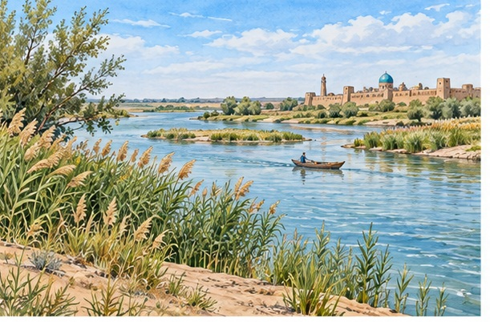
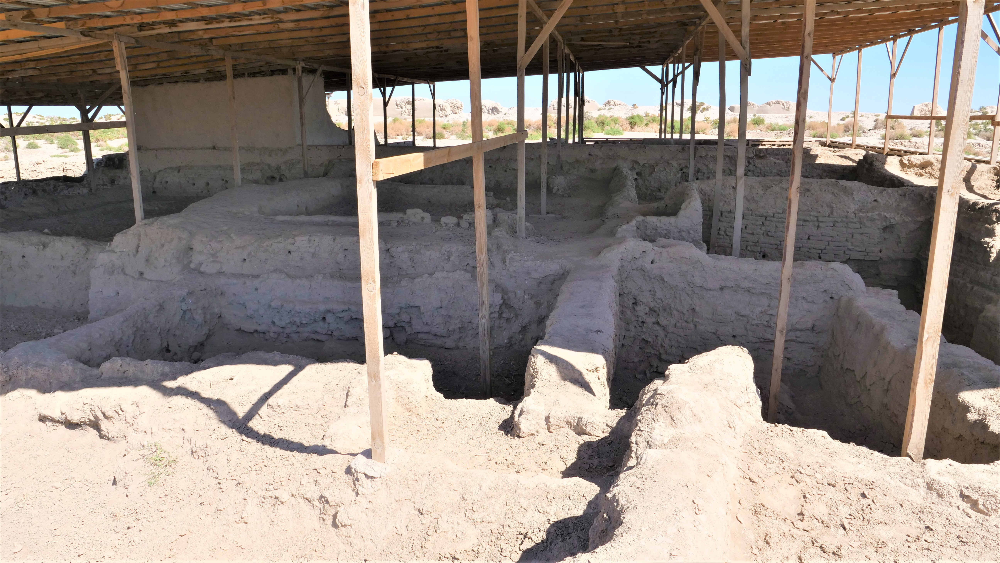
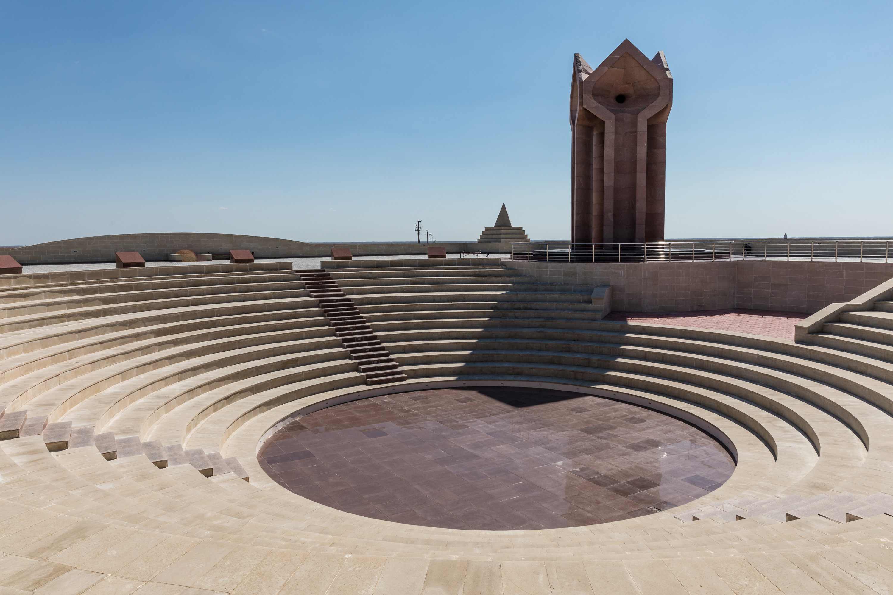
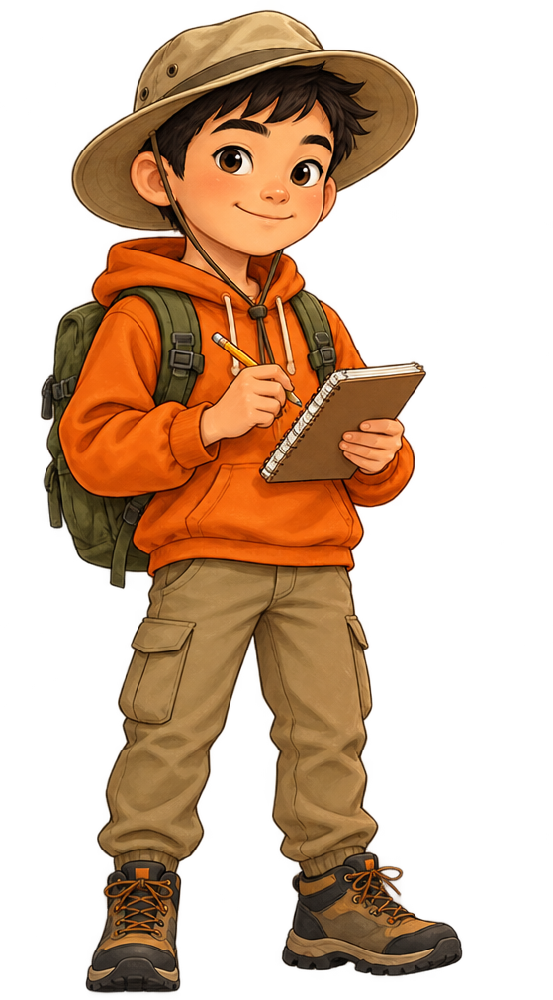
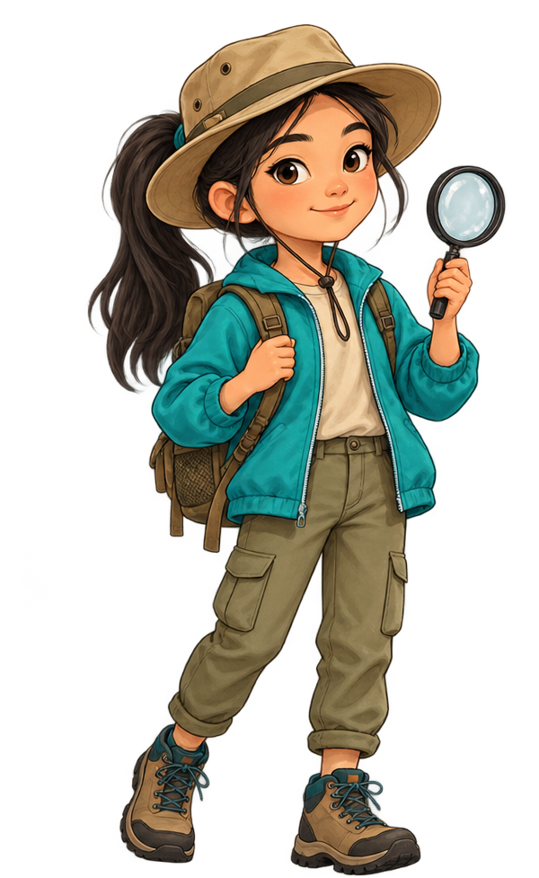

ТАРИХИ ОРЫН • 02:14
Сығанақ: даладағы саяси орталық
Қалашық орны мен оның Ақ Орда тарихындағы маңызы.
Картадан орнын тап. Деректі тексер. Өз репортажыңды жаса. Сыр бойының мұрасын жаңа көзқараспен зертте.

Әр нүкте — жеке оқиға. Таңдаған аялдамаңның тарихын ашып, дерек пен көркем бейнені ажырат.
Қысқа репортаж үлгілері тарихи орын туралы әңгімені видеоға айналдыруға көмектеседі.


Бұл бөлімде видеоға арналған репортаж сценарийлері ұсынылады. Көркем реконструкция тарихи фотосурет немесе нақты дәлел ретінде берілмейді.
Жеңілден күрделіге өт: алдымен таны, кейін қолдан, соңында өз дәлеліңді ұсын.

Тарихи тақырыпты түсіндір, тапсырмаңды талда немесе репортаж жоспарын құр. AI жауабын жоба дерегімен міндетті түрде салыстыр.

Өзің білгің келетін орын мен сұрақты анықта.
Кемінде екі сенімді деректі салыстыр.
Кіріспе, дәлел және қорытындыны жоспарла.
AI жасаған мәтін мен бейнені қайта тексер.